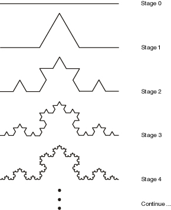

In some systems the developmental process is little more than a trivial mapping, but this misses an entire and fascinating source of diversity. Incorporating more complex developmental models can lead to geometric variations that are not stored as simple parameters, to repeated segments and recursive structures, to symmetries, and to the re-application of common toolboxes toward a widely differing set of purposes -- all things that are evident in biological evolution.
Many systems represent genetic information as a sequence of data, such as a string of characters or binary digits, just as our DNA is a single string. But this string winds upon itself multiple times, in complex ways, to create more subtle physical macrostructures; and also applies functionally to itself as one gene can turn another gene on or off in a complex regulatory network. That is, although it is a string at the lowest level, at higher structural and functional levels it operates like a tree or graph. (By analogy, although the text of a computer program is a linear string of characters, the grammar produces a tree of re-usable functions and so on, and the data/control flow it describes are more complex graphs.) Accordingly some artificial evolutionary systems also use more complex structures for genetic representations, including trees and graphs.
Looking back at our code-based genetics in the Biomorphs, an interesting challenge could be to extend this into more complex rewriting systems, such as L-systems, by embedding production rules, to create evolutionary-developmental systems! I.e., the genome isn't necessarily interpreted immediately into graphics, but instead/also into the production of more code for interpreting.
This point is important to consider. Rather than forcing symmetry with turtle-spawning operators in the interpreter, one could embed codes that duplicate and transform subsets of other substrings of the same code. The interpreter becomes simpler, but the code becomes more expressive. Such a developmental approach can be taken quite far. Karl Sims' evolved virtual creatures had a genotype that encoded a LISP function (the developmental system), which when run would produce a body shape (the skeletal system), but also produced an executable function for behaviour (the neural system). That is, the genetic code produces a developmental program that produces a neuro-physiological program. More generally, since we are evolving code, we may want to the genome to produce re-usable subroutines that can be used multiple times within the main phenotype program.
Taking this further, the developmental program could also be gradual, meaning we can model the increase in complexity of an organism from embryo to adult through the gradual rewriting of its various genetic, physiological, and neural systems.
The structure of a multi-cellular organisms develops in a gradual process from a single fertilized cell (the zygote) through progressive steps of cell duplication and specialization in a process called development; an active area of scientific research today. We know that each cell responds to chemical signals from its neighbors and other environmental conditions in order to know how to differentiate (to become a specific kind of cell in the body), according to the processes of the genome. The zygote does not contain a blueprint for the final organism, simply genotypic instructions for responding to environmental stimuli, which happen (in most cases) to produce the fully developed phenotype.
A compact developmental representation can result in a more complex developed organism by relying on the self-organizing tendencies of the chemical substrate (such as the chemical pattern formation we saw with reaction-diffusion systems), the creative re-use of instructions (leading to the modularity and symmetry widely found in biology), and careful control over the ordering, when and for how long particular instructions operate (heterochrony). Development is clearly parallel, decentralized, granting some robustness, and yet it is also context dependent. It is also self-limiting, such that most developmental processes halt after the embryonic phase (though some may continue through the organism's lifetime, such as the regeneration of lost limbs).
In 1968 biologist Astrid Lindenmeyer proposed to model several aspects of developmental systems (cell division, cell differentiation and cell death) using rewriting systems on symbolic strings. The analogy is that each symbol represents a cell in a particular state, and the rules of transformation represent the processes of differentiating from one state to another, dividing into two cells, or of programmed cell death.
(Cellular automata can also be used to model developmental processes, and arguably langton's reproducing loop does so, but rewriting systems offer a very simple and abstract model that can support growth. Sims' evolving creatures used a substitution method closely equivalent rewriting to generate their body structures, for example.)

Above is an example of a 3D-printed lampshade whose form is the product of a developmental simulation, by the Nervous System design studio.
A rewriting system defines rules for the transformation of structures, typically strings of symbols. It is closely related to the formal notion of grammar. A system comprises:
For example:
{ "B", "F", "+", "-", "[", "]" }, F -> FF B -> F[-B]+BB Then a sequence of productions could proceed as follows:
B
// apply rule 1:
F[-B]+B
// apply rule 1 (twice), and rule 2:
FF[-F[-B]+B]+F[-B]+B
// apply rule 1 three times, rule 1 four times:
FFFF[-FF[-F[-B]+B]+F[-B]+B]+FF[-F[-B]+B]+F[-B]+B
// etc.Notice that any symbol that is not a predecessor of a production rule is passed through unchanged (it is not removed).
One of the simplest ways to use rewriting sytems for art and design is to interpret the produced strings as instructions for another program. The classic example is using them as instructions for a "turtle graphics" interpreter.
For example, using the following system:
// just one rule: replace "F" with "F+F--F+F"
rules["F"] = "F+F--F+F"
// start with:
S = "F"If we interpret the "F" symbol to mean "move forward", and the "+" and "-" symbols to mean turn left and right by 60 degrees, then each successive application of this rule generates a successive iteration of the Koch curve fractal:

See the Koch curve example in the lab editor.
By adding push "[" and pop "]" symbols to save/restore graphics state (position, orientation etc.), the graphics interpreter can render branched structures such as trees and ferns. The result is further improved by reducing the length of each line according to the bracketed recursion depth, and embellishing with more context-sensitivity:

See the example Max/MSP/Jitter patch here
An alphabet and production rules specify a formal language. In 1959 Noam Chomsky identified a hierarchy of four types of formal languages. They rest on the concept of terminal and non-terminal symbols, where a symbol is terminal if it cannot be further rewritten. Nonterminal symbols, which can be further rewritten, are normally indicated using upper case letters (A, B, C) and terminal symbols by lowercase letters (a, b, c).
Each set in the hierarchy contains those above it:
So far we have considered only regular and context-free formal languages, since we have been restricted to single nonterminal symbols on the left-hand side (predecessors). Clearly, as a biological model (where the string is the phenotype and the production rules are genotype), our system should be context sensitive. Context would imply environmental conditions as well as neighbor cell signaling.
In order to support context-sensitive languages, we will need more powerful pattern-matching capabilities, and need extra care to handle ambiguous situations. E.g. we must be careful to consider longer patterns before shorter ones, to ensure that e.g. aba matches a rule aba -> abba rather than the rule a -> b. That is, our set of rules must now form a list (rather than a set), which is ordered by priority. And to match classes of structures, we may turn to using regular expressions or more powerful parsing expression grammars as the pattern and pattern-matching features.
The lab toolkit includes the peg.js library, available in the variable name "pegjs", which can be used to build parsers. This library also has an excellent online editor in which you can design grammars and test them. I have a parsing expression grammar tutorial designed for peg.js here.
A parametric L-system embeds parameters (such as line length and rotation angle) into the symbols, and sucessors may modify these parameter values. For example, the rule F(x) -> F(x*2) transforms a forward step into a forward step of twice the length.
A conditional parametric L-system extends this to incorporate conditions, such that the subsitution only occurs if the condition is true. For example, F(x : x < 10) -> F(x*2) transforms a forward step into a forward step of twice the length, only if the initial length was less than 10.
In both cases, our pattern matching system now needs to be able to handle classes of symbols (or at least, ignore anything between parentheses).
So far our systems are deterministic, and will always reproduce the same results after a fixed number of steps. To create a more natural-looking result, we can introduce non-determinism:
A stochastic L-system does the latter: for a given non-terminal predecessor, there may be several successor strings which are selected at random (possibly according to weights). Or, if the rules are listed by priority, each rule can have a probablity of being ignored.
L-Systems are difficult to predict and control: it is difficult to infer from an L-system definition and interpreter what the results will be, since (like cellular systems) the interactions are local but the consequences are global. Note that nature faces the same challenge: it cannot predict what changes to a genotype will result is viable or better phenotypes, and must proceed by trial and error (within the scope offered by development). Biologists exploring the mechanisms of development and generation of variation within it, and the relationship with evolutionary selection, work within the relatively new discipline of evolutionary development or "evo-devo".
The role of development in the generation of variation is equally important for artificial evolution, however it has been less thoroughly explored. Two lessons from the biologists:
Artificial Evo-Devo systems could be categorized as follows:
Whether it is parameters, sequence, mechanisms (or several) that are to be evolved, they must all be represented in the genome in forms that can be inherited, with additional mechanisms for generating variation (e.g. mutations). That is, each one of these elements must be represented symbolically as data (e.g. as strings, trees or matrices of symbols, which may be as low-level as binary form or as high-level as readable text).
Perhaps the most abstract and deeply computational artificial life models are those in which the organisms are the code, serving as environments for each other. This approach plays most directly upon the fundamental insight that code is data.
We generally assume that DNA also functions as both data and behaviour, but it has sometimes been overlooked that this is a material process. In bytecode soups, the code is not only data, it is the material on which code acts: fragments of code can react with each other, consume and produce each other, match or subvert each other, compete with each other for CPU time or memory resources, and thus evolve. These are the most digital of the artificial life organisms.

Since at least the early 1960's people have enjoyed creating virtual machines to explore the possibility of programs competing for control of the virtual machine processors and memory. The earliest example is the game Darwin, developed in 1961, in which programs competed to stop each other from executing. Later in Core War, another programming game in which programs (written in an abstract assembly language called "redcode") battle for control of a virtual computer, players discovered that rapid self-replication was a powerful strategy. (Virus and anti-virus systems have been modeled in these terms, although they also draw upon theories of immune systems and operate outside of protected environments.)
Steen Rasmussen took this idea and added genetic algorithms to evolve digital organisms in his Coreworld project; however complex evolution did not ensue, apparently because the assembly language was too brittle: mutations to code were far too likely to completely destroy a program. This problem of brittleness was overcome by the Tierra project.
"We can think of evolution as an artist..." - Tom Ray, The Tierra Video
Tom Ray was an evolutionary biologist working in tropical rainforests for 20 years, but frustrated with the difficulty of studying evolution in the natural world, due to the restriction of using fossil records left over millions of years. So he decided to try exploring evolution in a computer, where it can operate much faster, and offer alternative models of life to study.
Although he didn't really know anything about how computers work, he decided to write very simple self-replicating organisms in machine language. But rather than real machine code, he created a byte code language for a virtual computer -- since he was afraid that with real machine code it might break out and infect the internet like a recent Worm virus).
Nobody thought it would work, but remarkably, in his first ever run of the system, starting from a simple prototype organism, these organisms improved themselves multiple times, spawned parasites and hyperparasites, immune systems, symbiotic relationships, and more. Tierra found its way into Science, Scientific American, Economist, etc. It may have been the first Von Neuman computer designed for and showing evidence of evolvability.
The Tierra C source code creates a virtual computer and its Darwinian operating system, whose architecture has been designed in such a way that the executable machine codes are evolvable. This means that the machine code can be mutated (by flipping bits at random) or recombined (by swapping segments of code between algorithms), and the resulting code remains functional enough. Along with the C source code which generates the virtual computer, we provide programs written in the assembler code of the virtual computer, written by a human, and which do nothing more than make copies of themselves in the RAM of the virtual computer. This system results in the production of synthetic organisms based on a computer metaphor of organic life in which CPU time is the
energy'' resource and memory is thematerial'' resource. Memory is organized into informational patterns that exploit CPU time for self-replication. Mutation generates new forms, and evolution proceeds by natural selection as different genotypes compete for CPU time and memory space. Adapted from "What Tierra Is"
An organism is a program of code that occupies memory, and to be a viable organism this code must achieve self-replication, copying itself into another location in memory. One of the visualizations of Tierra represents the virtual memory visually as a sequence of bars, in which organisms are notated with specific colors.

Each image represents a soup of 60,000 bytes, divided into 60 segments of 1000 bytes each. Each individual creature is represented by a colored bar, colors correspond to genome size (e.g., red = 80, yellow = 45, blue = 79). -- As described here
The environment however is volatile:
By this combination of a population, mutation, replication with heredity, and selection pressures of viability, the entire bytecode system creates artificial evolution.
Tierra inherits many ideas from Core War, including circular memory, small instruction sets, instruction-level time sharing, and prevention of external access. However in other regards it differs with biological goals.
Effectively, the virtual computer is an example of a virtual "chemical soup" with unique "algorithmic chemistry", in which organisms are both code and data.
Soup (RAM): A fixed-size, circular ring, typically seeded with at least one functional organism.
Organisms: Each organism is a virtual CPU, operating in a simulated parallel fashion via the Slicer. Each CPU has its own set of 4 registers and 10 stack slots for temporary calculations (attempts to use more slots will wrap around), as well as the current instruction pointer and stack pointer.
Slicer (timesharing/threading service): A circular queue of organisms (processes). It allocates CPU time to each process in the queue in succession. Each processes' time slice can be a fixed length, or a uniform random variate, determined by the genome length, etc. When a new organism is born it is added to the queue behind its mother.
Reaper: A linear queue of organisms (processes). Processes enter the bottom of the queue at birth. If the memory is full, the Reaper kills processes at the top of the queue, removing them from both Reaper and Slicer. (A killed process could have its memory zeroed, randomized, or left as-is.) Older processes generally die first. When a process generates an error, it moves one position up the Reaper queue, while a successful birth of an offspring moves the process one position down.
Memory allocator: An organism (process) is born with memory given to it by the parent. It may have read, write, or execute protection (the default is write protection only, such that other processes may not write to the block). A process may only spawn one offspring at a time, and may only reserve one memory block for each (an additional memory request before giving birth frees the offspring memory block without giving birth and allocates a new one, and instructions copied to the old block are not used). The memory allocator could be configured to locate available space by first fit, better fit, random preference, near mother's address, and suggested address. The allocator is connected to the Reaper: when a memory request cannot be fulfilled because a block of the requested size is not available, the Reaper kills processes until a block of the requested size becomes available. The size of memory requests are limited.
Volatile conditions:
Instruction set:
In designing his virtual computer and its machine code, Ray asked: why can you randomly alter DNA, but you can't randomly alter a computer program? So he designed his bytecode instruction set to make it more robust:
Tierra originally had only 32 instructions (closer to the 20 amino-acid symbols of DNA than the much larger sets common in real PC architectures.) This makes random code far more likely to be valid.
Jump addresses described as templates, rather than fixed numbers (which would be likely to break under mutations). Template-matching is akin to the shape-matching used at microbiological levels. So, for example, the instruction sequence jmp nop0 nop0 nop1 causes execution of the program to jump to the nearest occurrence of the instruction sequence nop1 nop1 nop0. The complementarity (001 finds 110) ensures that the jump will not find a copy of itself.
Apart from template-using instructions, all other instructions are atomic, requiring almost no syntax constraints. This also makes random code far more likely to be valid.
No instruction can generate an error that would crash the virtual machine. Other errors are ignored (the instruction has no effect), but may reduce organism fitness (moving down the reaper list).
pushA, pushB, pushC, pushD: copy register values onto stack
popA, popB, popC, popD: remove & copy stack values onto registers
movcd, movab: copy one register to another
movii: copy from memory[A] to memory[B]
subCAB, subAAC, incA, incB, decC, zero etc.: simple arithmetic
not0, sh1: bit flip/shift
ifz: skip next instruction if C is zero
jmp, jmpb: jump to template (forward or backward)
call: push instruction pointer onto stack then jump to template
ret: jump to instruction according to stack value
adrf, adrb: search (fwd/back) for template, put address & template size in register C
mal: allocate memory of size C
divide: create a child
nop0, nop1: do nothing -- these serve only as labels for template matching
Ray's first ancestor organism looked like this:
nop1 ; 110 01 0 beginning marker
nop1 ; 110 01 1 beginning marker
nop1 ; 110 01 2 beginning marker
nop1 ; 110 01 3 beginning marker
zero ; 110 04 4 put zero in cx
not0 ; 110 02 5 put 1 in first bit of cx
shl ; 110 03 6 shift left cx (cx = 2)
shl ; 110 03 7 shift left cx (cx = 4)
movDC ; 110 18 8 move cx to dx (dx = 4)
adrb ; 110 1c 9 get (backward) address of beginning marker -> ax
nop0 ; 100 00 10 complement to beginning marker
nop0 ; 100 00 11 complement to beginning marker
nop0 ; 100 00 12 complement to beginning marker
nop0 ; 100 00 13 complement to beginning marker
subAAC ; 110 07 14 subtract cx from ax, result in ax
movBA ; 110 19 15 move ax to bx, bx now contains start address of mother
adrf ; 110 1d 16 get (forward) address of end marker -> ax
nop0 ; 100 00 17 complement to end marker
nop0 ; 100 00 18 complement to end marker
nop0 ; 100 00 19 complement to end marker
nop1 ; 100 01 20 complement to end marker
incA ; 110 08 21 increment ax, to include dummy instruction at end
subCAB ; 110 06 22 subtract bx from ax to get size, result in cx
nop1 ; 110 01 23 reproduction loop marker
nop1 ; 110 01 24 reproduction loop marker
nop0 ; 110 00 25 reproduction loop marker
nop1 ; 110 01 26 reproduction loop marker
mal ; 110 1e 27 allocate space (cx) for daughter, address to ax
call ; 110 16 28 call template below (copy procedure)
nop0 ; 100 00 29 copy procedure complement
nop0 ; 100 00 30 copy procedure complement
nop1 ; 100 01 31 copy procedure complement
nop1 ; 100 01 32 copy procedure complement
divide ; 110 1f 33 create independent daughter cell
jmpo ; 110 14 34 jump to template below (reproduction loop)
nop0 ; 100 00 35 reproduction loop complement
nop0 ; 100 00 36 reproduction loop complement
nop1 ; 100 01 37 reproduction loop complement
nop0 ; 100 00 38 reproduction loop complement
ifz ; 000 05 39 dummy instruction to separate templates
nop1 ; 110 01 40 copy procedure template
nop1 ; 110 01 41 copy procedure template
nop0 ; 110 00 42 copy procedure template
nop0 ; 110 00 43 copy procedure template
pushA ; 110 0c 44 push ax onto stack
pushB ; 110 0d 45 push bx onto stack
pushC ; 110 0e 46 push cx onto stack
nop1 ; 110 01 47 copy loop template
nop0 ; 110 00 48 copy loop template
nop1 ; 110 01 49 copy loop template
nop0 ; 110 00 50 copy loop template
movii ; 110 1a 51 move contents of [bx] to [ax] (copy one instruction)
decC ; 110 0a 52 decrement cx (size)
ifz ; 110 05 53 if cx == 0 perform next instruction, otherwise skip it
jmpo ; 110 14 54 jump to template below (copy procedure exit)
nop0 ; 110 00 55 copy procedure exit complement
nop1 ; 110 01 56 copy procedure exit complement
nop0 ; 110 00 57 copy procedure exit complement
nop0 ; 110 00 58 copy procedure exit complement
incA ; 110 08 59 increment ax (address in daughter to copy to)
incB ; 110 09 60 increment bx (address in mother to copy from)
jmpo ; 110 14 61 bi-directional jump to template below (copy loop)
nop0 ; 100 00 62 copy loop complement
nop1 ; 100 01 63 copy loop complement
nop0 ; 100 00 64 copy loop complement
nop1 ; 100 01 65 copy loop complement
ifz ; 000 05 66 this is a dummy instruction to separate templates
nop1 ; 110 01 67 copy procedure exit template
nop0 ; 110 00 68 copy procedure exit template
nop1 ; 110 01 69 copy procedure exit template
nop1 ; 110 01 70 copy procedure exit template
popC ; 110 12 71 pop cx off stack (size)
popB ; 110 11 72 pop bx off stack (start address of mother)
popA ; 110 10 73 pop ax off stack (start address of daughter)
ret ; 110 17 74 return from copy procedure
nop1 ; 100 01 75 end templateVisualization (ALMond):
In addition, the operating system provides a very elaborate observational system that keeps a record of births and deaths, sequences the code of every creature, and maintains a genebank of successful genomes. The operating system also provides facilities for automating the ecological analysis, that is, for recording the kinds of interactions taking place between creatures. Adapted from "What Tierra Is"

One of the most enduring questions facing biology (and artificial life) regards how life itself emerged from non-life, and how that boundary continues to be bridged ("protobiology"). The emergence of life has not yet been observed in physical materials, however there are many hypotheses offered. In general the problem is how life-like behavior and organization emerges from simpler physical chemical systems; or at the very least, how new orders of structure emerge from simpler chemical models. Artificial chemistries (AC) are systems with similarities to models of physics and chemistry which can be used to explore these speculative models with more rigor.
AC's were proposed by John McCaskill, but probably the best known example ("AlChemy", described below) was created by Walter Fontana and Leo Buss, presented at the second Artificial Life conference. Hideaki Suzuki and Takashi Ikegami pursued the concept in Japan (with "systems of machines and tapes", referencing both Turing's and von Neumann's early work). Banzhaf, Dittrich and Ziegler present an excellent review here. See also Artificial Chemistry. Hideaki Suzuki, Peter Dittrich. Artificial Life 2009, Vol. 15, No. 1.
Like artificial life, in artificial chemistries the assumption holds that organization (information) is the most essential component. One of the central insights stems from a clear analogy between life and computation: organisms are created by organisms, just as programs can create programs. The ease of mapping of code and data mirrors a relationship between physical structure and behavior (form and function).
Artificial chemistries are also one possible attractive option to overcome the 'over-specified' nature of most artificial evolutionary and / or developmental systems: a mechanism by which new features come into being, new behaviors, new sensors, new evolutionary pathways, even new modes of evolution. They have also been applied to optimization problems, and to the modeling of social systems.
Fontana's basic conjecture was that adaptive systems are characterized by self-referential processes, in which combinatorial objects encode functions that act back on those same objects. He addressed this by taking two inspirations from chemistry:
His insight was to treat fragments of code as equivalent to chemical molecules, and metaprogramming rewrites as equivalent to chemical reactions. That is, code that reacts by modifying itself. Fontana described his system as a "function gas" or "Turing gas", inspired by chemical flowmreactors, in that a large vessel of code fragments are agitated such that fragments randomly collide, and when they do, one is executed using the other as its input. That is, the code fragments are strings of executable code, that take other strings of code as input, and produce new strings of code as output. And thus, programs are the material objects of the world.
This is admittedly somewhat mind-boggling, and gets more so as his papers admit, however perhaps one way to get a grasp on it is to consider how we made an interpreter of a simple character language to generate graphical patterns as we created Biomorphs. Now imagine that rather than generating line segments, we are generating strings of code in the same character language. A crucial difference, which makes this more interesting, is that in Fontana's work it is not one string that is interpreted, but a pair of strings, where one is being inserted in the other during interpretation. You might observe that this is similar to what our evolutionary process of creating a new generation (rather than the developmental process of interpretation) achieved -- especially in the case of crossover recombination! However an important result of Fontana's work is that this evolutionary process emerges naturally from the chemistry itself, rather than being imposed from outside.
Importantly, there is no control over the order of the chemical reactions -- code fragments collide at random. The reaction process is thus:
This total system showed a remarkable ability to quickly self-organize from populations of random functions to highly specific functions with cooperative characteristics, reliably increasing internal order and complexity. The system showed adaptability to perturbations, and led to a complex set of organizational architectures including catalytic loops, hypercycles, and self-replicating structures.
"If syntactically legal strings of characters are combinatorial objects and if all legal strings define functions that transform legal strings into lega; strings, then we have an exceedingly simple instance of a combinatorial loop between objects and functions: an algorithmic chemistry, or AlChemy for short." Walter Fontana. Algorithmic Chemistry: a model for functional self-organization. 1990
Fontana's "AlChemy" language was designed for:
It is very simple, consisting of expressions that are either atoms or lists of expressions (including lists of lists of atoms, etc.) Atoms can be one of 11 pre-defined operators, or the symbol "a" to represent the current input variable.
This language is thus similar to LISP. LISP's simplicity makes it easy to manipulate through metaprogramming, and it is fairly unique in that data and programs look the same. It builds upon Alonzo Church's lambda-calculus, which is a functional formulation of computation yet still equivalent to the contemporaneous procedural Turing machine formulation.
Some example AlChemy molecules:
((-a)a(|(=aaa)a)(-a))
(aaa(%a))
(a(+(+a))(>a)(<a))
(a(%a)a('a))
(a(>(=(>a)(-a)(*aa)))('(=(*(<a)a)aa))(<(>(!aa))))The pre-defined operators consume fixed numbers of arguments and return a value result. Other lists produce "functions", that are applied to the atom immediately to their right (the argument). That is, all the "a" symbols in the function are replaced by the argument, then the function is evaluated to produce its result. The value of a list is defined recursively in terms of the values of its elements. This continues until all elements of the list have been evaluated, typically leaving as a result another list.
Because functions are evaluated and then applied to subsequent arguments there is a high risk of infinite recursions of limitless depth. In AlChemy, expressions are only allowed to recurse to a maximum depth of 10 to prevent this possibility. A time limit was also applied to each interaction.
The "(" and ")" characters are used to identify lists.
The "a" atom represents the input argument.
"'" this quote operator returns the argument without evaluating it
"%" returns the argument evaluated with the input being null (so long as the depth limit is not reached)
"+" return the first expression of a list (if input is an atom, just return the atom).
"-" return a list with the first expression deleted (if input is an atom, just return the atom).
">" and "<" are the inverse of "+" and "-"
"*" (2 arguments): if the second arg is a list, then return a copy of this list with the first argument inserted at its head. Otherwise just return the first argument.
"|" (2 arguments): the longer argument is shortened by the length of the shorter argument, and is then returned.
"=" (3 arguments): if first two arguments are identical strings, evaluate & return the third.
"/" (3 arguments): if the length of the first argument is odd, return the second, else the third argument.
Here is a remarkable collection of browser-based demos of the ChemLambda system, which has strong influences from Fontana's work.
A typical artificial chemistry includes:
A + B -> 2C or A + 2B -> A + D. Note that the second example is a catalytic reaction, since one of the inputs (A) is preserved unchanged. A reaction may also have other conditions, such as ambient temperature; and may have an associated probability ("rate constant") and energetic cost. An important design choice is how to define the reaction rules. For a finite system these could be designed by hand (or to model a well-known physical system). For an infinite system they must be derived on demand; this could be done programatically according to reactant structures, in an approximation to molecule bonding mechanisms (or protein folding). For example, a simple demonstration AC uses integer division to define reactions: each molecule type is an integer (greater than one), and two molecules can react if they leave no remainder after division (the long-term behavior of this system tends to increase the concentration of prime numbers). Another possibility is to generate reactions and rates randomly as needed.
The algorithm may also include a source and sink: the source is a continuous input of new (base) molecules, and a sink is a gradual removal of molecules to maintain population size. In addition, certain reactions may be filtered to make the whole system more interesting (e.g. discarding reactions that produce nothing more than one of their inputs).
There are clearly similarities with rewriting systems (where the active population is the item being rewritten, made of molecule terms and reaction productions). There can also be similarities found with evolutionary, cellular and dynamical systems. Alternatively, AC's can be viewed as a special case of agent systems, in which each agent belongs to a molecule-class, and reactions are a result of agent interacitons (in which interactions usually lead to the creation and destruction of agents).